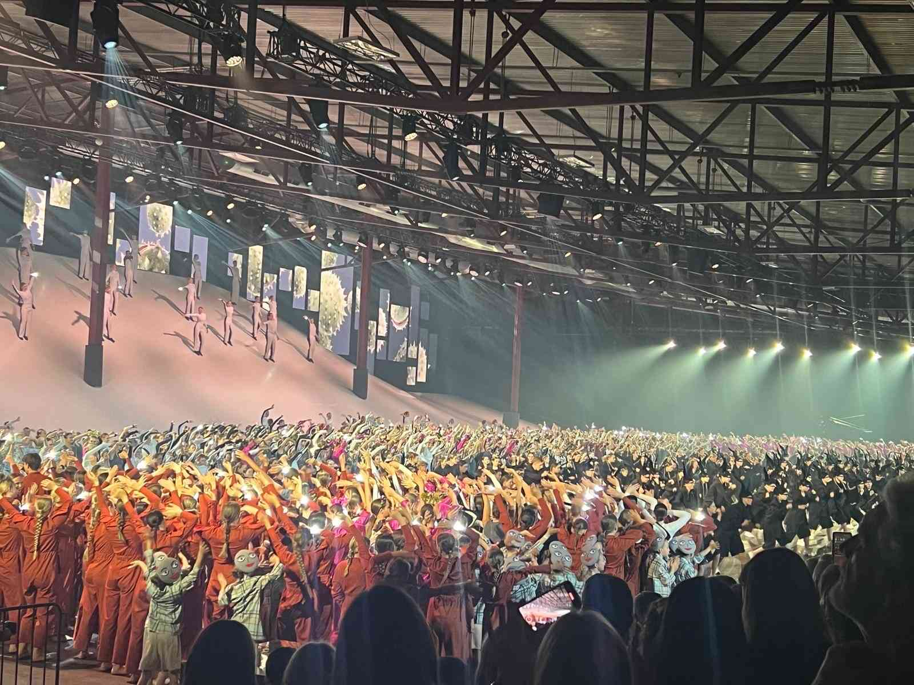
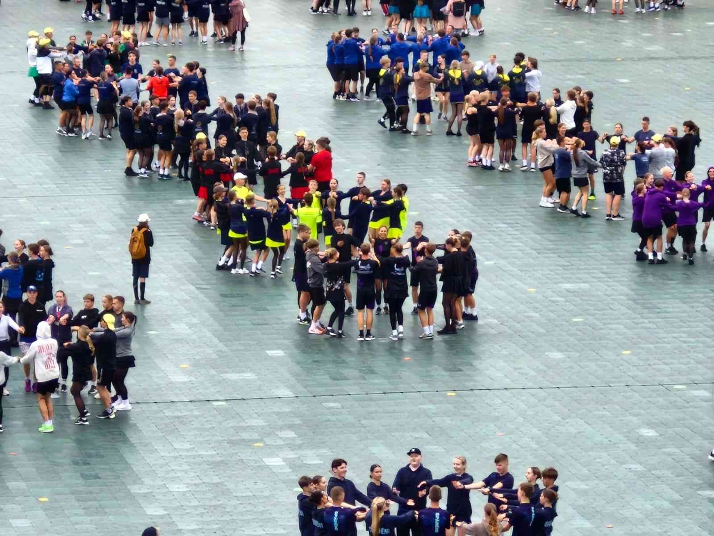

Man ir 16 gadi. Es dzīvoju Salaspilī, bet ne centrā, taču nomaļus. Es uzskatu, ka tur ir labāk, jo ir klusāk un arī ir vairāk privātuma. Man ir arī brālis, kurš ir 3 gadus jaunāks par manīm. Mēs esam ļoti draudzīgi savā starpā. Mēs kopā spēlējam dažādas spēles un ejam arā ar draugiem.
Es nodarbojos ar daudz un dažādām lietām. Ikdienā esmu aktīva. Man patīk nodarboties ar sportiem, piemēram, volejbolu, skriešanu, kā arī dejošanu. Man arī ļoti patīk veikt kaut kādas skaistumkopšanas lietas. Es trennējos pīt matus, pinot dažāda veida bizes vai arī astes.
Kad ārā ir silts, es bieži eju ārā ar draugiem. Mēs braucam ar riteņiem pa pilsētu, vai spēlējam volejbolu. Ja ir pavisam silts, tad ejam peldēties. Peldēšanā es arī esmu ļoti laba, jo ar to nodarbojos bērnībā.
Ziemas sezonā man patīk braukt ar snovbordu. Kopš 2021.gada es to daru katru ziemu. Taču ir reizes, kad ārā ir slipja ziema, vai arī vienkārši nesanāk atrast laiku, es ar ģimeni dodies slēpot ar distaņču slēpēm. Tas arī ir ļoti jautri!
Mūsdienu dejas dejoju jau 6 gadus. Tās dod iespēju brīvi izpaust savas emocijas un radošumu. Katrs dejas priekšnesums ir atšķirīgs un ļauj atklāt savu personību caur kustību. Treniņi palīdz attīstīt lokanību, spēku un ritma izjūtu. Man patīk arī mūzikas dažādība, kas padara dejas vēl interesantākas. Dejojot mūsdienu dejas, es jūtos pārliecināts un iedvesmots.
Volejbolu ir ļoti jautri spēlēt ar draugiem kopā vasarā, jo tā ir dinamiska un aizraujoša komandas spēle. Spēlējot es mācos sadarboties ar citiem un uzticēties savai komandai. Man patīk sajūta, kad izdodas labs serviss vai veiksmīgs uzbrukums. Volejbols palīdz uzturēt labu fizisko formu un attīsta ātrumu, veiklību un reakciju. Spēles laikā vienmēr ir azarts un pozitīvas emocijas.
Snovbords ir viena no manām mīļākajām nodarbēm ziemā. Man patīk traukties lejup pa kalnu, just ātrumu un svaigo gaisu. Tas man dod adrenalīnu un brīvības sajūtu, kādu grūti piedzīvot citur. Snovbords arī māca noturēt līdzsvaru un nepadoties, pat ja sanāk nokrist. Katru reizi uz kalna es izaicinu sevi kļūt labākam un drošākam.
Tautas dejas man ir ļoti tuvas, jo tās es jau dejoju kopš 3 gadu vecuma. Tās ļauj sajust mūsu kultūras bagātību un tradīcijas. Dejojot es jūtu īpašu kopības sajūtu ar pārējiem dejotājiem. Tautas dejas palīdz attīstīt stāju, ritma izjūtu un izturību. Man patīk arī krāšņie tautastērpi un dzīvā mūzika, kas rada svētku noskaņu. Dejojot tautas dejas, es jūtos lepns par savu kultūru un tās mantojumu.
Piedalīšanās 2025. gada Latvijas Skolu jaunatnes dziesmu un deju svētki man bija neaizmirstama pieredze. Bija īpaša sajūta dejot kopā ar tik daudziem jauniešiem no visas Latvijas un just kopīgo enerģiju. Mēģinājumi bija intensīvi, bet tie saliedēja mūsu kolektīvu un lika vēl vairāk novērtēt komandas darbu. Uzstāties lielajā stadionā tautastērpos un dzirdēt skatītāju aplausus bija ļoti aizkustinoši. Šie svētki man deva lepnumu par savu kultūru un skaistas atmiņas, kas paliks ilgi.

Piedalīšanās mūsdienu deju koncertā Dziesmu un deju svētkos bija ļoti īpaša pieredze. Uz lielās skatuves valdīja spēcīga enerģija, un kopā ar citiem dejotājiem varēja sajust īstu vienotību. Gatavošanās prasīja daudz darba un mēģinājumu, bet tas bija tā vērts. Skatītāju aplausi un emocijas pēc uzstāšanās radīja neaizmirstamu prieku. Tā bija pieredze, kas iedvesmo turpināt dejot un pilnveidoties.

Tautas deju koncerts Dziesmu un deju svētkos bija patiesi iespaidīgs un emocionāls notikums. Dejojot kopā ar simtiem citu dejotāju, varēja sajust spēcīgu kopības un tradīciju garu. Katrs solis un raksts laukumā bija rūpīgi iemācīts un veidoja skaistu kopskatu. Tautastērpi, mūzika un skatītāju atbalsts radīja svētku un lepnuma sajūtu. Šī pieredze man vēl vairāk lika novērtēt latviešu kultūru un tās bagātību.
Sazinies ar mani sociālajos tīklos!